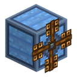
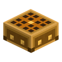
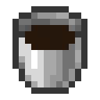
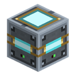

Увесь контент
117 сторінок

Генератори
9
Вітротурбіна
Вітрогенератор виробляє EU/FE з вітру — без палива, без сонця, лише висота та погода.
LV
Небесний вітряк
Небесний вітряк — другий щабель небесної гілки (T2), еволюція базового вітряка.
LV
Буревійний вітряк
Буревий вітряк — другий щабель буревої гілки (T2), еволюція базового вітряка.
LV
Водяний млин
Водяний млин обертається від проточної води й працює цілодобово — йому байдуже, ніч надворі чи гроза.
LV
Генератор
Генератор спалює тверде паливо — вугілля, деревне вугілля, блок вугілля, усе, що горить у ванільній печі, — і перетворює його на EU/FE.
LV
Геотермальний генератор
Геотермальний генератор палить лаву замість вугілля.
LVСонячна панель
Сонячна панель — ваше перше джерело енергії.
LV
Денна сонячна панель
Денна панель — вирощена версія базової панелі, другий щабель денної гілки.
LV
Місячна сонячна панель
Нічна (місячна) панель — нічний двійник денної панелі, другий щабель нічної гілки.
LV
Накопичувачі енергії
4
Зарядна станція
Зарядна станція — пласка плита заввишки чверть блока, на яку гравець просто стає.
LV
Згущувач енергії
Згущувач енергії — рамка-куб з повільно обертовою світлою кулею всередині.
LV
Посилене енергосховище
Посилене енергосховище — другий щабель лінійки накопичувачів: те саме призначення, що в Енергосховища, але на тир вище.
MVЕнергосховище
Енергосховище — перший накопичувальний блок моду: копить EU/FE від генераторів і віддає його машинам.
LV
Передача енергії
8
Олов'яний кабель
Олов'яний кабель — найдешевший провід у моді й перший на кабельних сходах.
LV
Ізольований олов'яний кабель
Ізольований олов'яний кабель — покращена гумою версія олов'яний кабелья.
LVМідний кабель
Мідний кабель — основний кабель ранньої гри та провід стартового ланцюжка: сонячна панель → акумулятор → подрібнювач руди.
LV
Ізольований мідний кабель
Ізольований мідний кабель — покращена гумою версія мідний кабелья.
LV
Золотий кабель
Золотий кабель — перший у моді провід тира MV.
MV
Ізольований золотий кабель
Ізольований золотий кабель — покращена гумою версія золотий кабелья.
MV
Електрумовий кабель
Електрумний кабель — перший провід тира HV.
HV
Ізольований електрумовий кабель
Ізольований електрумний кабель — покращена гумою версія електрумний кабелья.
HV
Машини
15
Залізна піч
Залізна піч — покращена паливна піч, що займає нішу між ванільною піччю та електропіччю.
LV
Лісопилка
Лісопилка — LV-машина для переробки дерева.
LVПодрібнювач
Подрібнювач — машина раннього подвоєння руди.
LV
Компресор
Компресор — LV-машина, яка стискає сировину у щільніші форми: металевий пил — на зливки, вугільний і самоцвітний пил — назад на предмети, лід і сніг — на щільніші блоки, тростину…
LV
Екстрактор
Екстрактор — LV-машина, яка витягує корисний матеріал із сировини: барвники з квітів, насіння з гарбуза й кавуна, порошок зі стрижня іфрита, кремінь із гравію.
LV
Електрична піч
Електропіч — повний електричний аналог ванільної печі.
LV
Сплавильна піч
Сплавна піч — перша машина моду, яка об'єднує кілька різних матеріалів в один новий.
LV
Електронагрівач
Електронагрівач ставиться прямо під Вулканізатором і дає йому максимальний рівень тепла — 3, тобто три гуми з однієї порції сировини замість однієї на багатті.
LV
Полімеризатор
Полімеризатор — перша машина моду, яка їсть не предмет, а рідину.
LV
Вулканізатор
Вулканізатор завершує нафтовий ланцюжок: один сирий каучук і чотири пили сірки перетворюються на гуму.
LV
Електрованна
Електрованна — LV-машина гальванічного осадження: волокно й срібний пил занурюються у воду, крізь них пропускається струм, і срібло осідає на волокні провідною доріжкою.
LV
Складальний автомат
Складальний автомат — перша MV-машина моду й кінець ручному крафту по 64 стеки.
MV
Консервний завод
Консервний завод не пакує продукт у бляшанку — він переробляє їжу на харчову цінність і розливає її по однакових пайках.
LV
Ремонтний верстак
Ремонтний верстак лагодить зношені ротор вітряка і колесо водяного млина замість того, щоб крафтити нові.
LV
Термоцентрифуга
Термоцентрифуга — другий ступінь подвоєння руди.
LV
Машини для рідин
2

Логістика предметів
1

Логістика рідин
1

Зберігання рідин
1
Матеріали
16
Олов'яна руда
Олово — перший метал моду й основа тира LV: дроти та схеми, на яких працюють ваші перші машини.

Сірчана руда
Сірка — ранній видобувний неметал для вулканізації каучуку.

Срібна руда
Срібло — рідкісний і глибокий метал моду, зарезервований під електроніку: матеріал, з якого зберуть схеми та компоненти тира MV.

Нікелева руда
Нікель — найскупіший і найглибший метал моду, зарезервований під вхід у тир MV: він стане сплавом для корпусів MV-машин і просунутих схем.
Уранова руда
Уран — найрідкісніший метал моду, зарезервований під ядерний трек (РІТЕГ, реактор, збагачення).

Паладієва руда
Паладій — перший і поки що єдиний матеріал моду, який видобувається у Пеклі.

Нафта
Нафта — перша рідина моду й єдиний ресурс, який не можна ні скрафтити, ні виплавити: її лише знаходять.

Бронзовий злиток
Бронза — найдешевший і наймасовіший із чотирьох сплавів моду.

Купронікелевий злиток
Купронікель — сплав міді з нікелем один до одного, який варить сплавна піч.

Інваровий злиток
Інвар — штучний сплав заліза з нікелем, який варить сплавна піч.

Електрумовий злиток
Електрум — сплав золота зі сріблом один до одного, який варить сплавна піч.

Блок загартованого заліза
Блок загартованого заліза — це блок-сховище: 9 зливків загартованого заліза, стиснуті в один повнорозмірний блок.

Обшивка із загартованого заліза
Обшивка із загартованого заліза — декоративний будівельний блок із 4 пластин загартованого заліза: «тех-панель» з екраном і лініями.

Срібна обшивка
Срібна обшивка — декоративний будівельний блок із 4 срібних пластин: акуратна металева плитка 2×2 з болтами по кутах.

Дизель
Дизель — легка фракція перегонки нафти й цільовий продукт Перегінної колони: 700 mB з кожного відра сирої нафти.

Мазут
Мазут — важкий залишок перегонки: 200 mB з кожного відра нафти, стікає в нижній бак Перегінної колони.

Сільське господарство
3
Жердка
Жердинка — опора для витких рослин і перша агрокультура моду.

Станція дрона-садівника
Станція дрона-садівника — блок-док 1×1 (як база робота-пилососа), з якого піднімається дрон і облітає територію навколо станції радіусом 4 блоки.
LV
Інкубатор
Інкубатор — мультиблок 1×2: присадкувата механічна основа внизу і скляний купол згори.
LV
Високотехнологічні машини
1
Утилітарні блоки
14Залізна скриня
Залізна скриня — просте сховище предметів на 36 слотів (4 ряди × 9): на цілий ряд більше за ванільну скриню.

Срібна скриня
Срібна скриня — просте сховище предметів на 45 слотів (5 рядів × 9): на цілий ряд більше за залізну скриню (36).

Золота скриня
Золота скриня — просте сховище предметів на 54 слоти (6 рядів × 9): на цілий ряд більше за срібну скриню (45).

Електрумова скриня
Електрумова скриня — сховище на 81 слот (9 рядів × 9): у півтора раза більше за золоту скриню (54).

Модуль зберігання
Модуль зберігання — блок на 27 слотів, який уміє головне: зростатися із сусідами.

Рамка-індикатор
Рамка-індикатор — це рамка, яку вішають на будь-який контейнер (ванільну скриню, бочку, шалкер або модову залізну скриню), і вона в реальному часі показує просто на собі, скільки…
LV
Збагачений урановий смолоскип
Збагачений урановий смолоскип — декоративне джерело світла: рівень світла 14 (як у ванільного смолоскипа), але з яскравим зеленим полум'ям і рідкісними зеленими іскрами.

Верстат індустріаліста
Верстак індустріаліста — декоративний повний блок «стіл з лещатами» у сталевій гамі моду й робоче місце нової професії жителів — Індустріаліста.
Книга-путівник
Книга-путівник — внутрішньоігровий підручник по моду Ala Industrial.

Player Profile
Особистий кабінет — окремий екран-профіль гравця.

Chests/Spawn Bonus Chest
Це не блок моду, а доповнення ванільної таблиці здобичі бонусної скрині.

Великий відлякувач
Великий відлякувач — найвищий щабель охоронного поля: радіус 24 блоки (куб 49×49×49) за 64 EU/FE/такт.
HV
Малий відлякувач
Малий відлякувач — охоронний блок: доки він під'єднаний до енергомережі й поле увімкнене, ворожі моби тікають із зони навколо нього — так само, як кріпер тікає від кота, — і не…
LV
Середній відлякувач
Середній відлякувач — вирослий варіант малого відлякувача: радіус зони вдвічі більший (16 блоків), витрата — 32 EU/FE/такт.
MVАпгрейди
2


Компоненти
20
Залізний пил
Форми матеріалів — родина предметів-напівфабрикатів: пил, а згодом пластина, болванка й дріт, — на які машини та рецепти перетворюють руди й зливки.

Загартоване залізо
Загартоване залізо — зливок, який отримують переплавкою одного ванільного залізного зливка.

Залізна шестірня
Металеві шестерні — родина крафт-компонентів: кам'яна, залізна, золота й срібна.
Електронна схема
Електронна схема — базовий крафт-компонент моду, «мозок» майже кожної ранньої (LV) машини й накопичувача.

Машинний корпус
Корпус машини — базовий блок, з якого збираються машини.

Мідна котушка
Мідна котушка — крафт-компонент: намотка мідного кабелю на олов'яному осерді.

Батарея
Батарея — перший носій енергії в моді: маленький акумулятор на 2 000 EU/FE, який можна заряджати, розряджати й носити з собою пачкою.
LV
Водяне колесо
Колесо водяного млина — крафт-компонент: колесо, що встановлюється у слот колеса водяного млина.

Ротор вітряка
Ротор вітряка — крафт-компонент: лопаті, що встановлюються у слот ротора будь-якого вітряка (T1 базовий, T2 небесний/буревий).

Аналізатор мережі
Мережевий аналізатор — ручний діагностичний прилад, дружня альтернатива команді /ala net для гравців без прав оператора.

Порожній чип
Порожній чип — крафт-компонент, заготовка-основа, на якій будуються функціональні чипи-апгрейди.

Сонячний еволюційний чип
Еволюційні чипи — крафт-компоненти, які перетворюють базові T1-форми на T2.

Гума
Гума — кінцевий продукт нафтового ланцюжка:
LV
Просунута схема
Просунута схема — другий щабель електронної схеми і перша деталь, заради якої доводиться довести до кінця нафтовий ланцюжок.
MV
Просунутий машинний корпус
Просунутий корпус машини — те саме, що корпус машини, але щаблем вище: на ньому збираються машини середнього (MV) рівня.
MV
Чип дублювання
Мутаційні чипи — три предмети, які перемикають Інкубатор між режимами роботи.

Резонуючий уламок
Продукти мутації — матеріали, яких немає ні в жодній скрині, ні в жодній руді, ні в жодному крафті: їх видає лише Інкубатор.

Чип випадкового стрибка
Резонансний ланцюжок — три предмети, які робляться один з одного та існують заради єдиної мети: навчити станцію телепорта кидати гравця у випадкову точку світу.

Згусток енергії I
Згусток енергії — те, на що Згущувач енергії перетворює надлишок мережі: енергію, яка інакше просто зникла б.

Флюкс-тканина
Флюкс-нитка і Флюкс-тканина — два ступені одного матеріалу, єдина дорога до броні з Флюкс-тканини.

Ігрові предмети
20
Ковальський молот
Ковальський молот — ручний інструмент раннього етапу, яким роблять металеві пластини до того, як з'явиться машинна автоматизація.

Гайковий ключ
Гайковий ключ не витрачається й уміє дві речі: налаштовувати грані предметної труби і розбирати блоки моду.

Загартоване залізне кайло
Кайло із загартованого заліза — перший ручний інструмент моду Ala Industrial.

Tempered Iron Tools
Інструменти із загартованого заліза — набір із п'яти ручних інструментів моду Ala Industrial: кайло, сокира, мотика, лопата і меч.

Tempered Iron Chestplate
Броня із загартованого заліза — повний набір із чотирьох предметів: шолом, нагрудник, поножі й черевики.

Scythe
Коса — ручний інструмент для швидкого прибирання декоративної рослинності та збору врожаю.

Батарейний мішок
Батарейний мішок — перший електро-предмет моду: переносне сховище, яке працює як ванільний мішечок, але вдвічі місткіше й потребує заряду.
LV
Вакуумна капсула
Вакуумна капсула — стековний контейнер для рідин.

Електробур
Електробур — перший ручний електроінструмент моду: алмазне кайло, яке працює на EU/FE замість міцності.
LV
Електролопата
Електролопата — третій ручний електроінструмент моду й земляна частина лінійки після електробура (камінь) та електропили (дерево).
LV
Електропила
Електропила — другий ручний електроінструмент моду й дзеркало електробура по дереву: сокира, яка працює на EU/FE замість міцності.
LV
Електромотика
Електромотика — четвертий і останній ручний електроінструмент лінійки: після бура (камінь), пили (дерево) і лопати (земля) вона закриває грядки.
LV
Електромагніт
Електромагніт — заряджуваний на EU/FE предмет-зручність: лежить у будь-якому слоті інвентаря (хотбар / основний / друга рука) й автоматично притягує до гравця предмети, що лежать…
LV
Енергоранець
Енергоранець — носимий енергобуфер: надягається у слот нагрудника і, поки ви його носите, раз на секунду підживлює всі електро-предмети у вас в інвентарі.
LV
Джетпак
Джетпак — носимий EU/FE-предмет для польоту: займає слот нагрудника (замість броні) й несе буфер 30 000 EU/FE.
LV
Флюкс-нагрудник
Броня з Флюкс-тканини — перший у моді повноцінний EU/FE-комплект і кінець ланцюжка волокно → Флюкс-нитка → Флюкс-тканина.
LV
Анемометр
Анемометр — ручний прилад без енергії.

Пульт телепорту
Пульт телепорта — ручний предмет-маяк: зв'язується зі станцією телепорта через shift-ПКМ і потім запускає стрибок гравця до станції.
LV
Посудина душ
Посудина душ — скляна колба у срібній оправі з піском душ на дні.

Електрошабля
Електрошабля — п'ятий предмет лінійки електро-спорядження і перша її зброя: після бура (камінь), пили (дерево), лопати (земля) і мотики (грядки) черга дійшла до бою.
LV